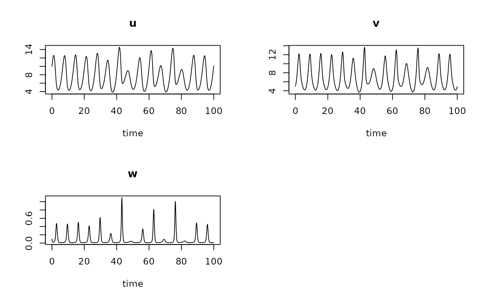
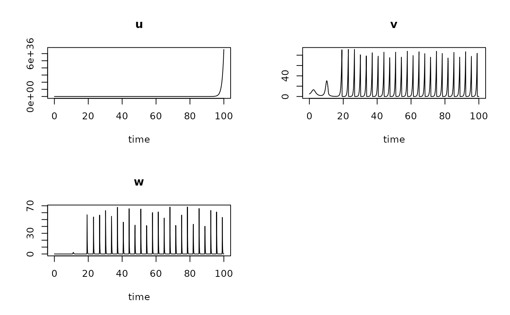
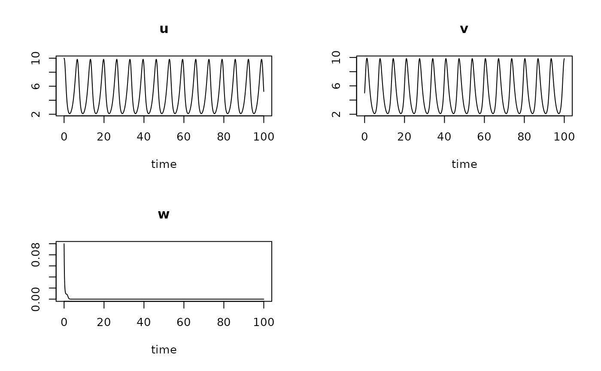

The Uniform Period Chaotic Amplitude Model
upca.Rdsimecol example: resource-predator-prey model, which is able to exhibit chaotic behaviour.
Usage
data(upca)Format
S4 object according to the odeModel specification.
The object contains the following slots:
mainThe differential equations for predator prey and resource with:
equationsTwo alternative (and switchable) equations for the functional response.
parmsVector with the named parameters of the model, see references for details.
timesSimulation time and integration interval.
initVector with start values for
u,vandw.solverCharacter string with the integration method.
Details
To see all details, please have a look into the implementation below and the original publications.
References
Blasius, B., Huppert, A., and Stone, L. (1999) Complex dynamics and phase synchronization in spatially extended ecological systems. Nature, 399 354–359.
Blasius, B. and Stone, L. (2000) Chaos and phase synchronization in ecological systems. International Journal of Bifurcation and Chaos, 10 2361–2380.
Examples
##============================================
## Basic Usage:
## explore the example
##============================================
data(upca)
plot(sim(upca))
# omit stabilizing parameter wstar
parms(upca)["wstar"] <- 0
plot(sim(upca))

# change functional response from
# Holling II (default) to Lotka-Volterra
equations(upca)$f <- function(x, y, k) x * y
plot(sim(upca))

##============================================
## Implementation:
## The code of the UPCA model
##============================================
upca <- new("odeModel",
main = function(time, init, parms) {
u <- init[1]
v <- init[2]
w <- init[3]
with(as.list(parms), {
du <- a * u - alpha1 * f(u, v, k1)
dv <- -b * v + alpha1 * f(u, v, k1) +
- alpha2 * f(v, w, k2)
dw <- -c * (w - wstar) + alpha2 * f(v, w, k2)
list(c(du, dv, dw))
})
},
equations = list(
f1 = function(x, y, k){x*y}, # Lotka-Volterra
f2 = function(x, y, k){x*y / (1+k*x)} # Holling II
),
times = c(from=0, to=100, by=0.1),
parms = c(a=1, b=1, c=10, alpha1=0.2, alpha2=1,
k1=0.05, k2=0, wstar=0.006),
init = c(u=10, v=5, w=0.1),
solver = "lsoda"
)
equations(upca)$f <- equations(upca)$f2
